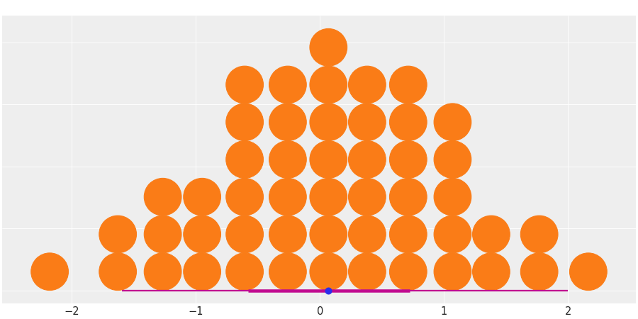

Dot Plot¶
API documentation: plot_dot()

Python source code: [download source: matplotlib/mpl_plot_dot.py]
import matplotlib.pyplot as plt
import numpy as np
import arviz as az
az.style.use("arviz-darkgrid")
data = np.random.normal(0, 1, 1000)
az.plot_dot(data, dotcolor="C1", point_interval=True, figsize=(12, 6))
plt.show()
Python source code: [download source: bokeh/bokeh_plot_dot.py]
import numpy as np
import arviz as az
data = np.random.normal(0, 1, 1000)
az.plot_dot(data, dotcolor="C1", point_interval=True, figsize=(12, 6), backend="bokeh")